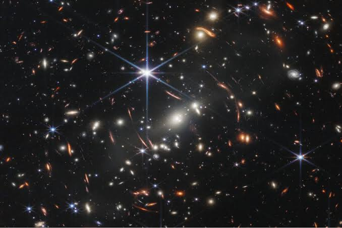
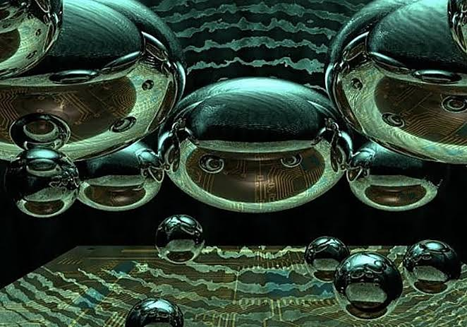
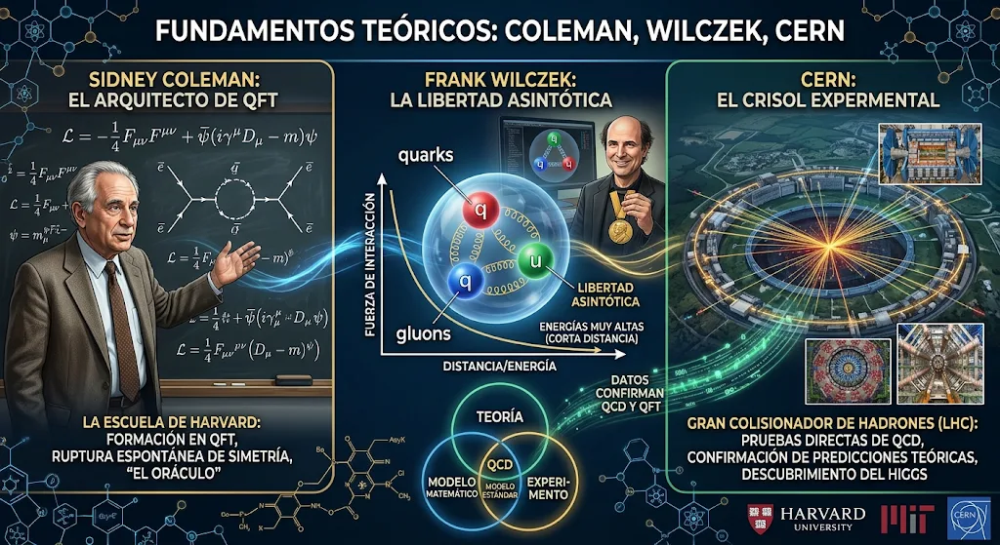
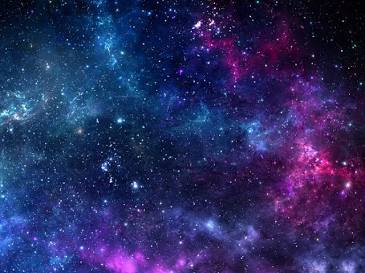

Para comprender uno de los escenarios más radicales, abstractos y aterradores que contempla la física teórica moderna en relación con los peligros definitivos del universo, es fundamental definir primero qué es la inestabilidad del vacío cuántico y el concepto físico del falso vacío. En la cosmología contemporánea y la teoría cuántica de campos, el vacío no es una región de la nada absoluta o un espacio desprovisto de propiedades, sino un sustrato dinámico impregnado de campos fundamentales, entre los cuales destaca el campo de Higgs, responsable de conferir masa a las partículas elementales. Según los cálculos derivados del Modelo Estándar de la física de partículas y las mediciones experimentales de la masa del bosón de Higgs y del quark top realizadas en colisionadores de alta energía como el Gran Colisionador de Hadrones del CERN, nuestro universo se encuentra actualmente en un estado conocido como falso vacío, lo que significa que el vacío en el que habitamos constituye un mínimo local de energía que es extraordinariamente estable a escala temporal humana, pero que no representa el estado fundamental absoluto de menor energía posible que el universo podría alcanzar.

A partir de esta definición teórica, el peligro catastrófico que entraña este fenómeno radica en la posibilidad de un cambio de fase espontáneo del espacio-tiempo, un proceso conocido en la literatura científica como decaimiento del vacío o tunelamiento cuántico. Si por una fluctuación cuántica puramente aleatoria se formara en cualquier punto infinito del cosmos una burbuja microscópica de verdadero vacío, es decir, el estado de energía verdaderamente mínimo, esta burbuja se desestabilizaría de inmediato y comenzaría a expandirse esféricamente en todas direcciones a la velocidad absoluta de la luz. En el preciso instante en que la frontera de esta burbuja expansiva alcanzara cualquier región del espacio, alteraría radicalmente las constantes fundamentales de la naturaleza, modificando la masa de los electrones y quarks, desestabilizando los enlaces químicos, haciendo imposible la existencia de átomos estables y disolviendo por completo cualquier forma de materia organizada, estrellas, planetas y vida biológica, sin que exista posibilidad alguna de advertencia previa, detección anticipada o defensa teórica, ya que la señal de su llegada viajaría exactamente a la misma velocidad que la propia destrucción.

Entre los fundamentos científicos y las contribuciones teóricas que han dado sustento a esta hipótesis destacan los trabajos pioneros de físicos teóricos como Sidney Coleman y Frank Wilczek, quienes en las décadas de mil novecientos setenta y ochenta formalizaron matemáticamente la estabilidad de los vacíos cuánticos y las tasas de transición posibles mediante efectos de tunelamiento. Las mediciones de precisión del bosón de Higgs llevadas a cabo en el CERN a partir de dos mil doce permitieron a los físicos calcular con mayor rigor la probabilidad de este evento, revelando que los parámetros actuales del universo sitúan al vacío en una zona de metastabilidad, lo que indica que si bien el tiempo de vida estimado de nuestro falso vacío supera con creces la edad actual del universo, el evento en sí mismo es físicamente posible según las leyes conocidas de la física cuántica

Asimismo, la investigación cosmológica moderna analiza cómo este tipo de transiciones de fase primordiales pudieron haber ocurrido durante las primeras fracciones de segundo posteriores al Big Bang, durante el periodo de inflación cósmica, configurando las leyes físicas que rigen nuestro universo actual. Aunque la probabilidad de que el decaimiento del vacío ocurra en nuestra vecindad galáctica en los próximos miles de millones de años es extraordinariamente baja, la mera implicación de que la realidad física que nos rodea sea intrínsecamente frágil y esté sujeta a un colapso total desencadenado por las propias fluctuaciones cuánticas del espacio subatómico representa la cumbre definitiva del terror cósmico, donde las amenazas ya no provienen de cuerpos celestes violentos o radiaciones estelares, sino de la estructura misma del tejido espaciotemporal.
